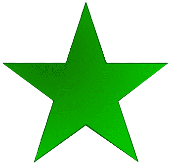

Grupo A
Qatar
El equipo Qatar tiene 54 goles y a jugado 183 partidos
Ecuador
Hasta la fecha ha logrado clasificarse para 4 ediciones de la Copa Mundial de Fútbol (2002, 2006, 2014, 2022).

senegal
La selección de fútbol de Senegal es el equipo representativo del país en las competiciones oficiales.
Paises Bajos
Es el equipo que representa al país en la Copa Mundial de fútbol sala de la FIFA